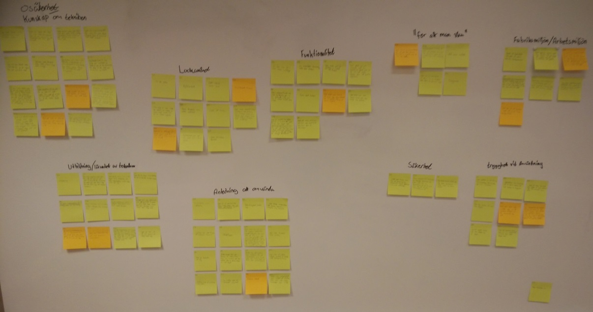
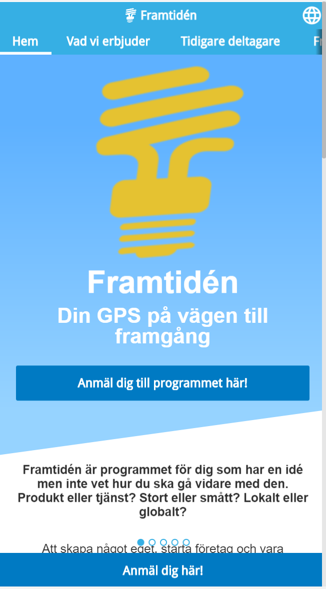

Examensarbete
Handlar om vilka faktorer som påverkar användares attityd mot en ny IT-produkt innan den har implementerats.

CLAM
Projetarbete som jag gjorde tillsammans med en klasskamrat för clam.se och är framtagen främst för att användas på surfplattor.

Prototypprojekt
Grupparbete där en prototyp av en mobilbaserad hemsida till Framtidén togs fram.

Service Design
Grupparbete där ett koncept för Billinge Trail Maraton skulle tas fram för att göra en mer komplett upplevelse för deltagarna.